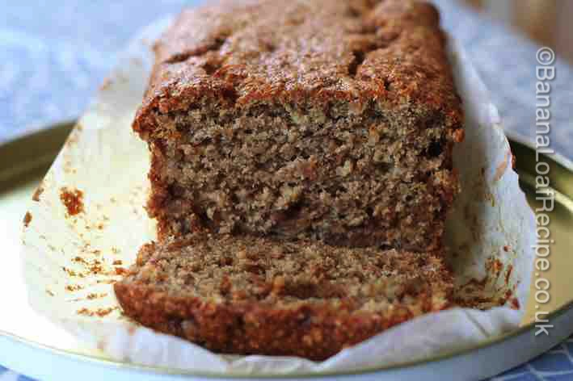

The home of easy and delicious banana loaf recipes and a wealth of articles to answer all your banana loaf baking needs.
Who doesn't like banoffee pie? So why not all the same elements but in an easy cake form? It really is just the ticket if you have a sweet tooth. With a perfect balance of banana and fudge, the wholemeal flour adds flavour and the brown sugar enhances the caramel edge. Moist, even slightly sticky, it works perfectly for afternoon tea - or why not serve with lightly whipped cream for the perfect dessert?
Fudge chunks can be found in the baking aisle of most major supermarkets. They are the most widely available ingredient that we have found that recreates the right flavour to imitate the caramel layer of a banoffee pie.
A deliciously simple banana and fudge cake that takes its inspiration from banoffee pie.
Gives: 8-10 slices
Prep Time:
Cook time:
Total time:
8oz/225g wholemeal plain flour
4tsp baking powder
4oz/110g light brown sugar
4oz/110g butter
1lb/450g bananas, mashed with a fork (approx 3-4; weight is with skin)
2 eggs, beaten
3-4oz/75-100g fudge chunks
Equipment: a 2lb loaf tin (approx 23cm x 13cm x 7cm)
1. Preheat the oven to 160 degrees C, Fan 150 degrees C, gas mark 4 or 350 degrees F.
2. Use baking parchment or a ready-shaped loaf tin liner to line the loaf tin.
3. Mix the flour, baking powder and sugar together in a roomy bowl. Be sure to crush any bigger clumps of sugar.
4. Add the butter or margarine to the dry ingredients, chop it up with a table knife and then, using your fingertips, rub the fat into the dry ingredients. (This is the same method as making crumble or pastry - see our rubbing-in method article for step-by-step instructios.) The result will be a bowl of what looks like fine breadcrumbs.
5. Spoon in the mashed banana and beaten eggs, then the fudge chunks and mix well.
6. Transfer the cake mixture into your lined tin.
7. Bake for about an hour. Testing with a skewer should help you know if the cake is cooked - the skewer will come out clean.
8. Let the cake cool on a wire baking rack.
9. Slice for afternoon tea or serve as a dessert with whipped cream.

10. You can store this cake for up to a week in an airtight tin or freeze some or all for future enjoyment.